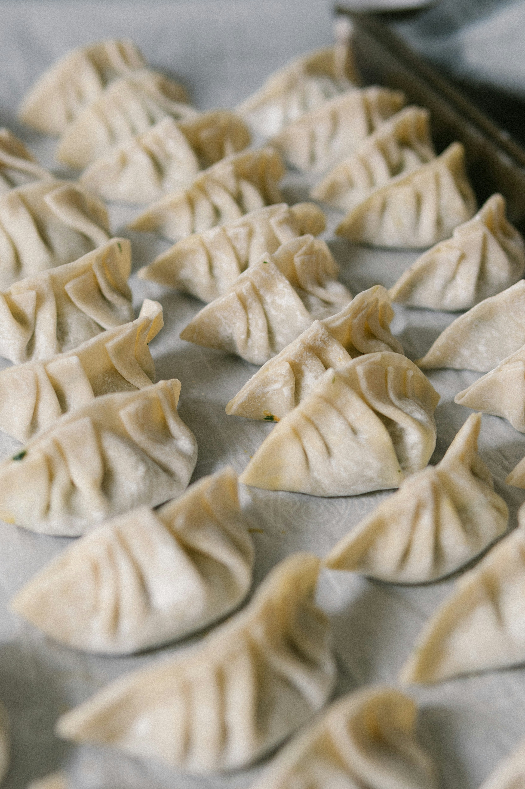

recipes
Dumplings

Dumpling recipe derived from Magic Ingredients and Chopstick chronicales
Ingredients
- 60 Dumpling wrappers
- 500g Beef, pork or chicken mince
- Wombok 5 leaves
- Soy sauce 16g
- Ginger 5g
- Garlic 5g
- Seasume oil 5g
- Egg white 1
- Green onion 3
- Salt to taste
- Pepper to taste
- Oil 10g
Steps
- Finely cube the wombok. Set into a bowl and generously salt. Mix to combine and wait 10 minutes before squeezing the water out.
- Peel and finely chop the ginger and garlic. Finely chop the green onion
- To a bowl, add the mince, soy sauce, ginger, garlic, seasume oil, salt, pepper and green oil
- To a pan, heat up oil before adding to the mince mixture
- Add the wombok to the bowl and mix all together
- Using the dumpling wrappers, wrap the mince mixture